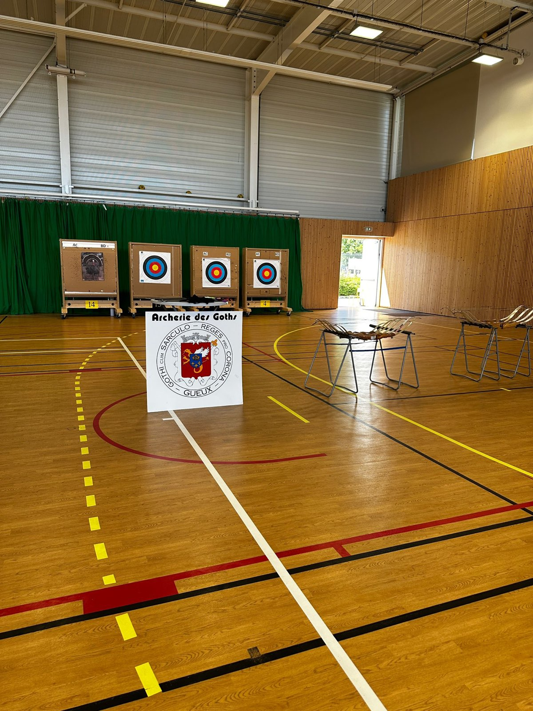
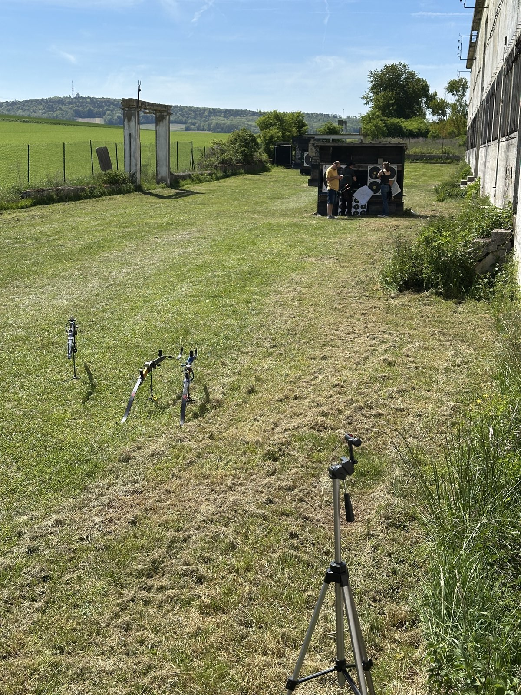
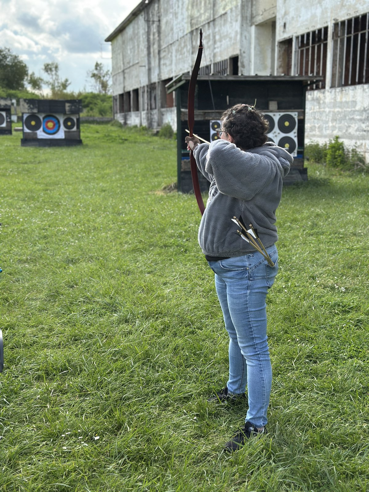
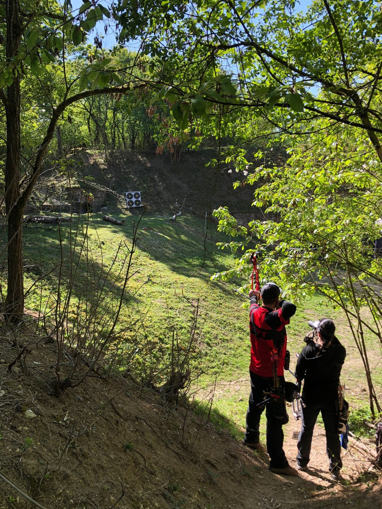
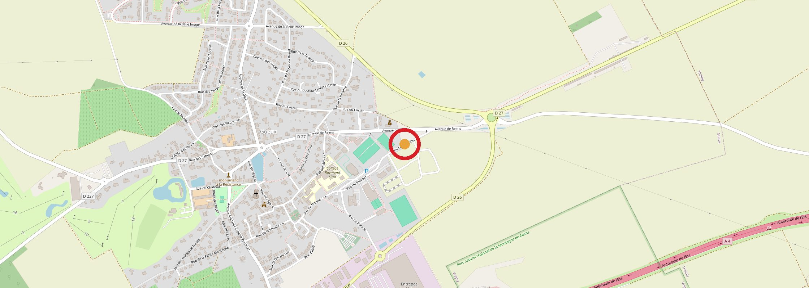

- Fondé en 1983
- 12 médailles aux championnats de France
- 3 compétitions organisées chaque saison
La vie du club
À Gueux depuis 1983.
Le club
L'association a été fondée en 1983. Elle compte une vingtaine d'archers, du Poussin au Super Vétéran, et plus de la moitié sont des adultes. Certains tirent pour le plaisir, d'autres font les championnats nationaux : le club a ramené 12 médailles des championnats de France.
École de tir
Au Complexe sportif de Gueux, on accueille les jeunes dès 5 ans et les adultes débutants. Pas besoin d'acheter de matériel pour commencer : le club loue des arcs d'initiation et de compétition pour la saison, de septembre à fin juin.
Compétition
Le club organise au moins trois compétitions officielles par saison : un concours en salle en décembre, un tir en campagne en avril et, en juillet, un parcours 3D sur cibles animalières en pleine nature.
Venez tirer avec nous
L'école de tir a lieu le mercredi, les compétiteurs s'entraînent le lundi, le jeudi et le vendredi soir, et la salle est aussi ouverte le samedi après-midi. Passez nous voir, on vous met un arc entre les mains.
Complexe sportif de Gueux · Rue du Moutier · 51390 Gueux
Terrain permanent extérieur : accès libre réservé aux adultes confirmés et aux mineurs accompagnés d'un adulte.
L'adhésion
3 séances d'essai offertes avant de vous inscrire
La formule Découverte permet de commencer en cours de saison, à partir du 1er mars.
Jeunes
- 85 €Enfant de 5 à 10 ans (Poussin)
- 95 €Jeune de 11 à 20 ans
Adultes
- 150 €Compétition
- 115 €Club
- 70 €Licencié sans entraînement
Jeunes et adultes : + location d'arc 50 € la saison si vous n'êtes pas équipé
Formules spéciales
- 40 €Découverte, dès le 1er mars
- 60 €Scolaires, convention UNSS
Location · Arc métal Evolution
Location · Arc compétition
Inscriptions toute l'année
Venez à un entraînement ou écrivez-nous, à n'importe quel moment de la saison. Les débutants sont les bienvenus. Les 3 premières séances sont offertes, vous vous inscrivez ensuite si ça vous plaît.
La salle & le terrain
Nos installations au Complexe sportif de Gueux et en extérieur.




Nous trouver
Complexe sportif de Gueux
Rue du Moutier
51390 Gueux
Terrain extérieur à côté de la salle.
Itinéraire (ouvre un nouvel onglet)